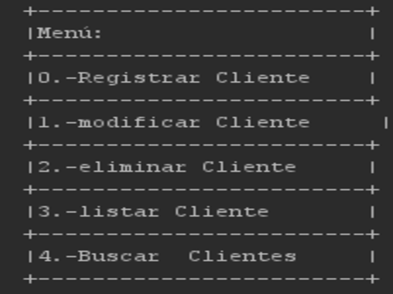
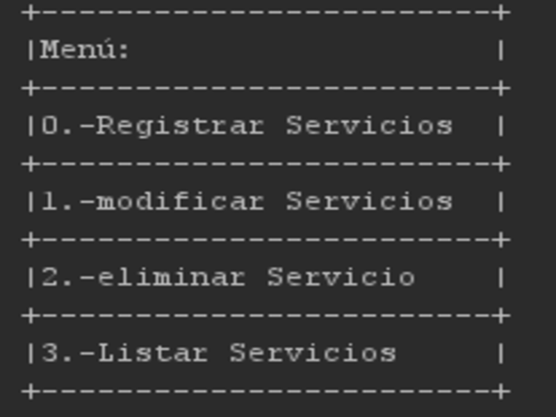
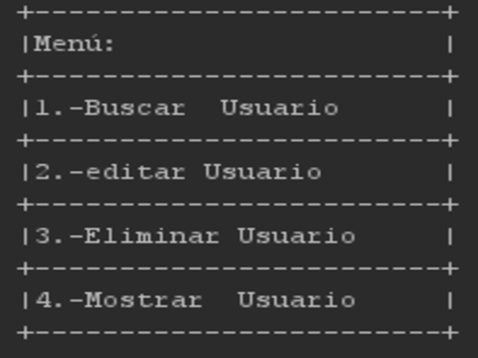
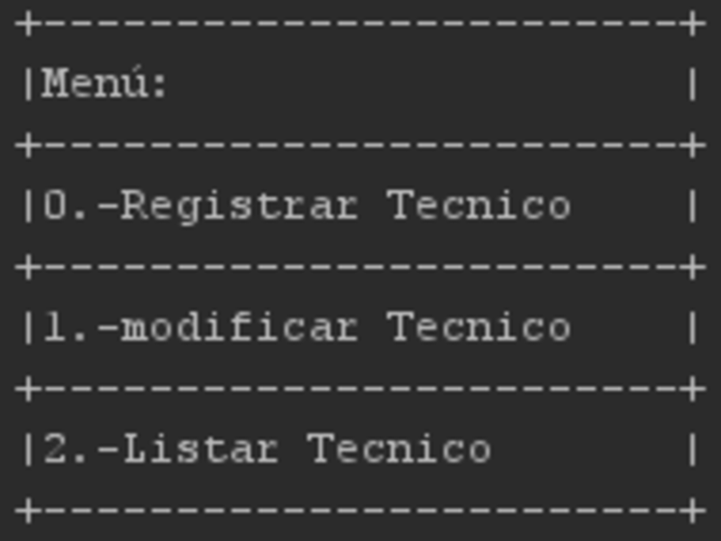
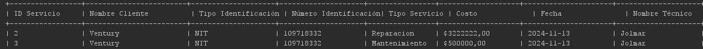

Sistema de Gestión de Mantenimiento para Estufas Industriales
Desarrollé un sistema de escritorio para la gestión de clientes, técnicos, usuarios y servicios de mantenimiento de estufas industriales. El sistema permite administrar la información mediante operaciones CRUD, centralizando los datos en una base de datos MySQL y facilitando el seguimiento de los servicios realizados.

Menú Principal
Panel principal del sistema que permite acceder a los módulos de Clientes, Servicios, Usuarios y Técnicos, además de la opción para salir de la aplicación.

Módulo de Clientes
Permite registrar, modificar, eliminar, listar y buscar clientes, manteniendo organizada toda la información de las personas o empresas atendidas.

Módulo de Servicios
Administra los servicios de mantenimiento y reparación mediante funciones para registrar, modificar, eliminar y consultar los servicios realizados.

Módulo de Usuarios
Gestiona los usuarios del sistema, permitiendo buscar, editar, eliminar y visualizar la información de las cuentas registradas.

Módulo de Técnicos
Permite registrar, modificar y listar los técnicos responsables de realizar los mantenimientos y reparaciones.

Listado de Servicios
Visualiza el historial de servicios registrados mostrando información como cliente, tipo de servicio, costo, fecha y técnico responsable.